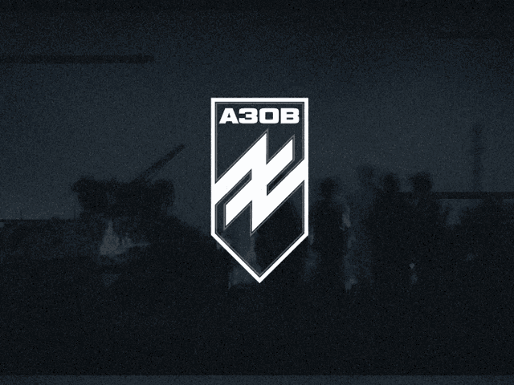

Начнем с азов
Отдельный отряд специального назначения «Азов» (укр. Окремий загін спеціального призначення «Азов»), более известный как полк «Азов» (укр. полк «Азов») или батальон «Азов», — подразделение в составе войсковой части 3057 (12-я бригада оперативного назначения НГУ) Восточного оперативно-территориального объединения Национальной гвардии Украины.
Подразделение было сформировано в мае 2014 года в Мариуполе из добровольцев, объединившихся для борьбы с поддерживаемыми Москвой пророссийскими повстанцами, которые организовали отделение двух сепаратистских регионов на востоке Украины в 2014 году. Азов был сформирован как батальон Патрульной службы милиции особого назначения Министерства внутренних дел Украины, в сентябре 2014 года был развёрнут в полк, в ноябре 2014 года переведен в состав Национальной гвардии Украины.
Why does russia fear the Azov Regiment?
We spoke about the history of the Azov battalion (Regiment) with radio host and historian Oleksandr Alforov.
From 2014-to 2015, the Azov Battalion began to understand that education must develop. Veterans, who knew English, began to work on translations of NATO textbooks for sergeants. They were handed out in the main area of the educational center of the battalion in Mariupol. A school for officers was created there, where officers were trained to act in compliance with NATO standards. This is why our boys are so strong, brave, and unique.
Oleksandr Alforov: The Azov Battalion is a battalion that, from May 5th, 2014, is under the Ministry of Internal Affairs, and from September 14, 2014, is a battalion of the National Ukrainian Guard. We have repeatedly heard accusations of Azov’s “terroristic activity.” This is an accusation not only directed towards the battalion, but also towards the National Guard and the government of Ukraine itself.
Russia has used all possible platforms to discredit Ukraine, its history, and its path to freedom and independence. People must realize that the Azov Battalion became a part of the “Russkiy Mir” propaganda employed by Russia. Azov fell under the “gusty fire” of
Russian propaganda because on the 13th of July 2014, it freed the city of Mariupol from the Russian occupation. After this event, Russian propaganda began to discredit the Azov Battalion
What does the Azov symbol mean?
The symbol doesn’t really belong to the Azov battalion. It was created in the 1990s in Western Ukraine. It is a monogram of two letters in the Cyrillic alphabet, used by Ivan Franko. The “Idea of the Nation” is the slogan hidden in the monogram, as the letter “H” in Cyrillic is written “N”, as in the Latin Alphabet. This slogan was taken and used by Ukrainian patriots and nationalists. The symbol itself first appeared on badges of Ukrainian troops in 2014.
The Azov soldiers call themselves nationalists. In Ukraine, we understand what this means. The rest of the world doesn’t. You must translate this to them as “patriot.” The Russian Federation, using terminological differences, started saying that the members of “Azov” call themselves Nazis not nationalists. Here, Russia, which has an advantage over Ukraine in the field of diplomacy and mass media, practiced this substitution of concepts. Terminological features that the Kremlin uses in its propaganda changed the definition of nationalism to Nazism, and eventually to neo-Nazism.